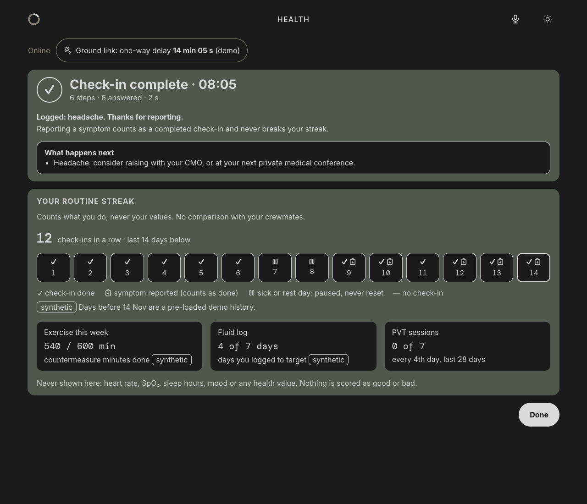

Rewards · streaks
The problem
Astronauts keep symptoms quiet for fear of losing flights.
The streak
Counts check-ins, exercise and water. Reporting a symptom counts too.
Sick days
Pause the streak, never a penalty.
We never score your heart rate or compare you with the crew.

Six Dots Companion